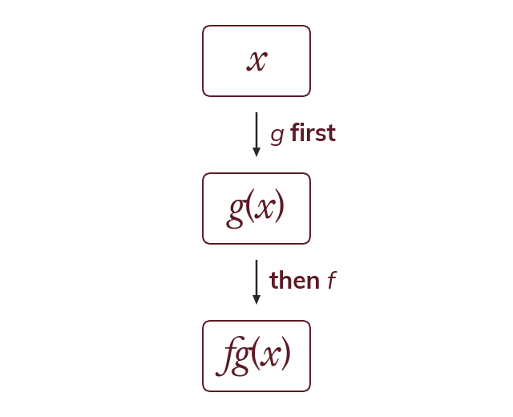

The inner function acts first
In the inner function g acts first. The output of g becomes the input of f.
In the inner function g acts on x first and f acts on the result, so the function written next to x always goes first. The output of g becomes the input of f.